[1] 42.12931Quarto ile Raporlama
MBG4181 Biyolojik Veri Analizi ve Görüntüleme
Alper Yılmaz
2026-11-23
İletişim
What good is an image/analysis/result if you are unable to communicate
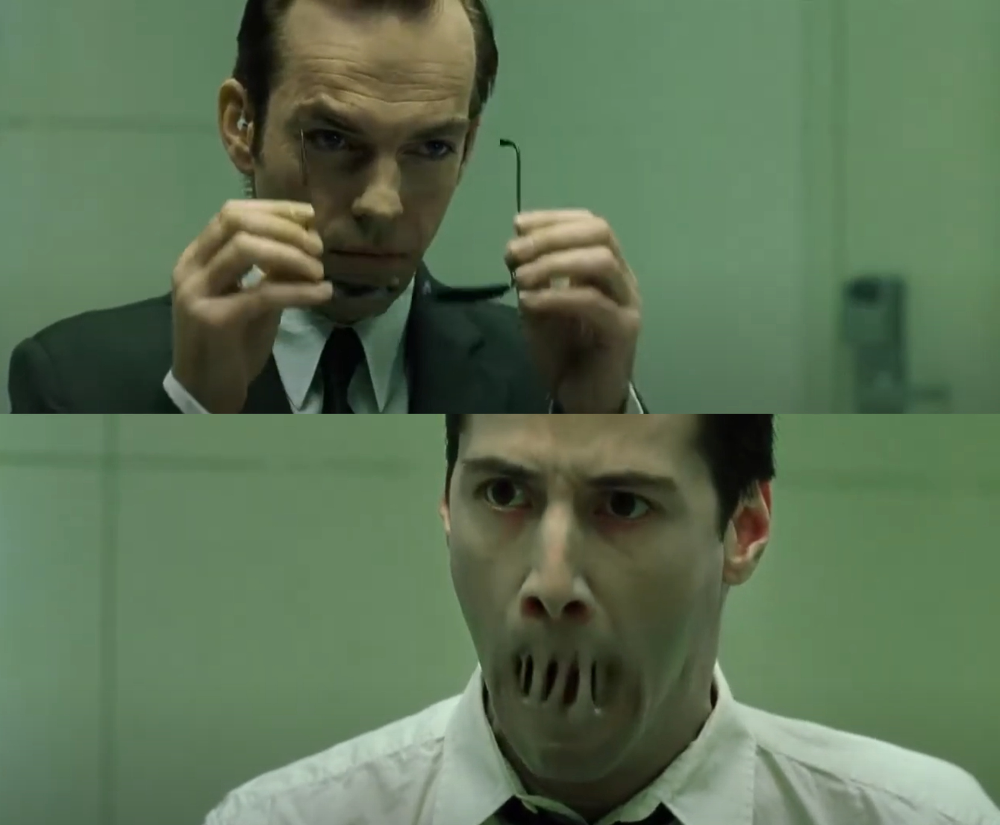
Rapor yazmak: neden zor?
Analizden sonra rapor hazırlarken:
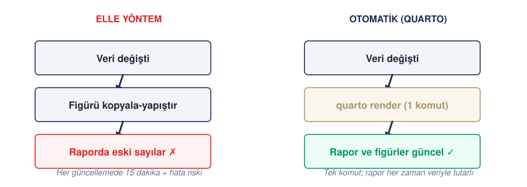
Veri güncellendiğinde: yeni ölçüm, yeni sürüm, yeni filtre. Elle kopyalanan figürler, tablolar eski kalır, rapor artık doğru olmaz.
Çözüm: raporu elle yazmayın
Metni, kodu ve çıktıyı tek bir dosyada tutun; dosyayı “derleyin”. Veri değişince raporu yeniden derlenir ve güncel olur.
Quarto: tek dosyada metin + kod + çıktı
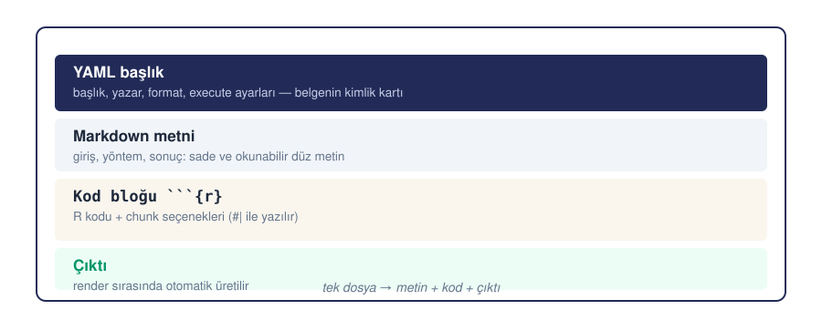
ders7.qmd → HTML / PDF / Word / sunum / poster
- Markdown: düz metin — okunabilir, sürüm kontrolünde rahat
- Kod bloğu: R kodu, belge içinde, normal R komutu gibi
- Çıktı: render sırasında otomatik üretilir, elle kopyalanmaz
Quarto (RMarkdown’ın yanında)
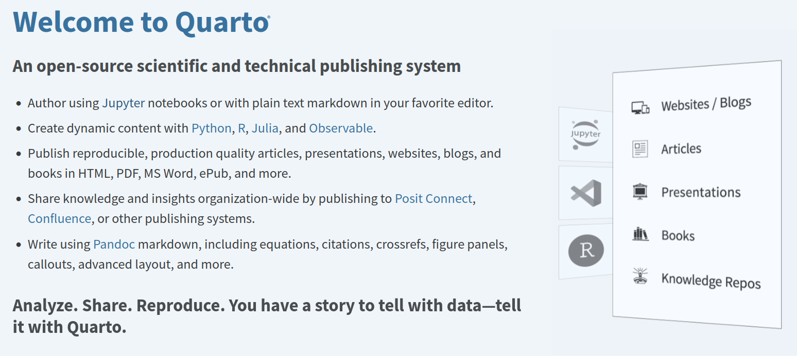
İpucu
İpucu. RMarkdown hâlâ aktif olarak kullanılıyor, ama lütfen Quarto kullanın.
Nasıl çalışır?
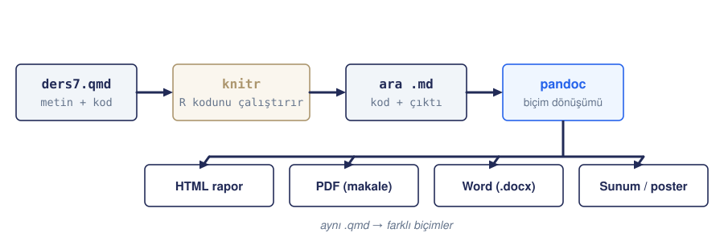
İki aşama var:
- knitr — R kodunu çalıştırır, çıktıları araya yerleştirir → ara
.md - pandoc — o
.mddosyasını istediğiniz biçime çevirir → HTML, PDF, DOCX…
Tek kaynak, çok çıktı
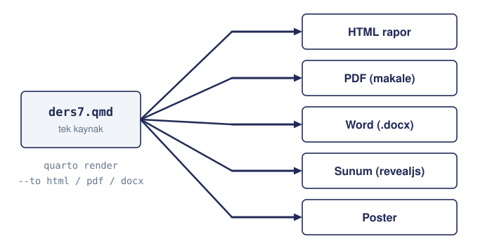
Aynı analiz, aynı metin — farklı okurlar için farklı biçim.
Markdown: metin + biçim
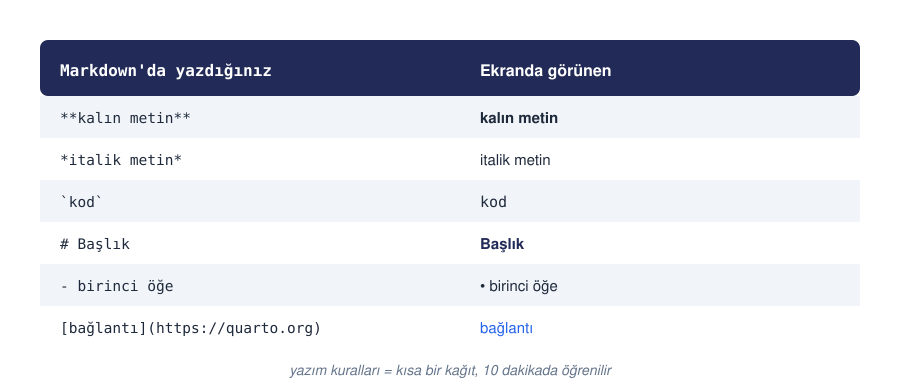
- Yazarken “kalın” yazarsınız, ekranda kalın görünür
- Kod yazarkin
`airquality`gibi ters tırnak kullanırsınız - Başlık
#, liste-, bağlantı[metin](url)
.qmd: düz metin dosyası
Quarto belgesi, farklı biçimlere derlenebilen sıradan bir düz metin dosyadır:
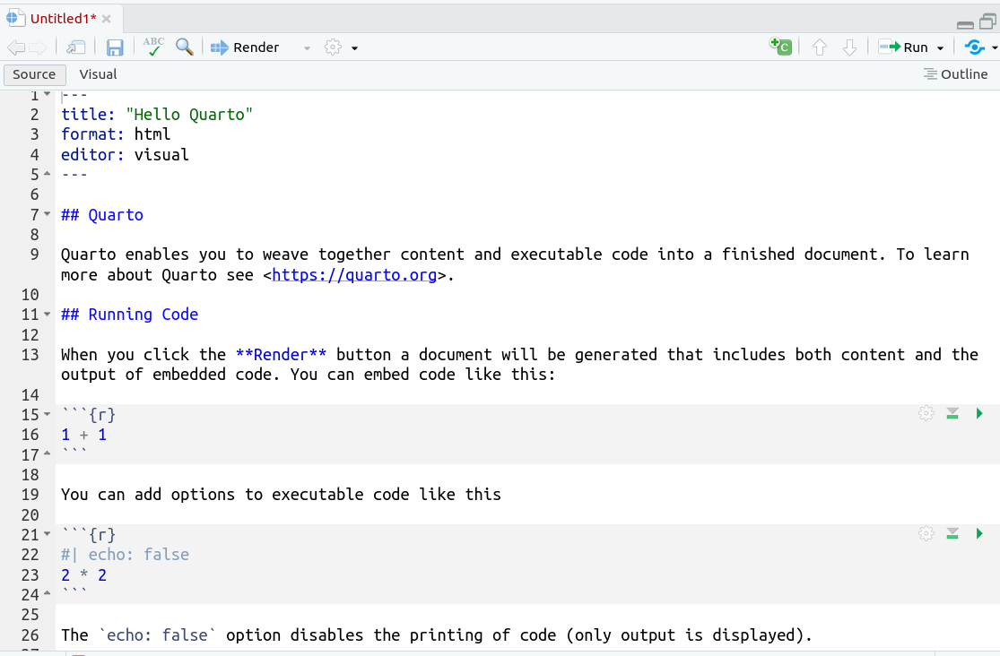
RStudio’da açılmış bir .qmd: üstte YAML, altında metin ve kod blokları.
… HTML
Aynı dosyayı derleyince (Render) tarayıcıda açılan bir HTML rapor olur:
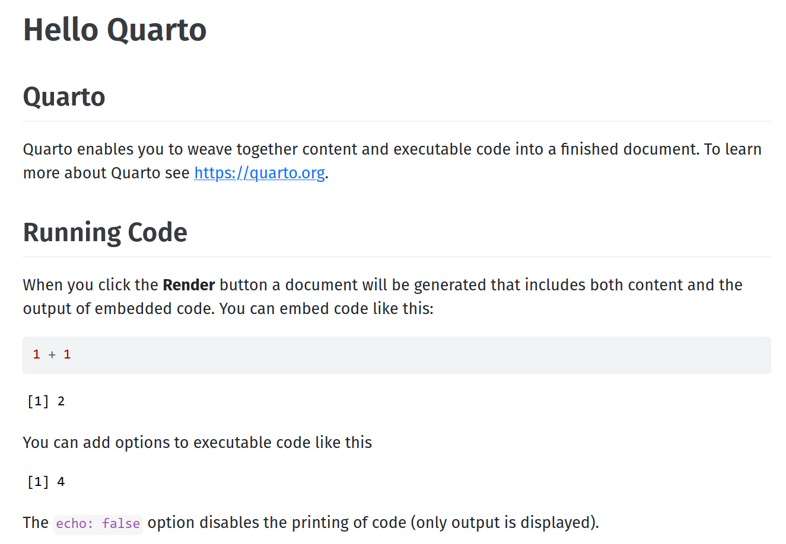
Sıra sizde
İlk Quarto belgemizi oluşturup derleyelim.
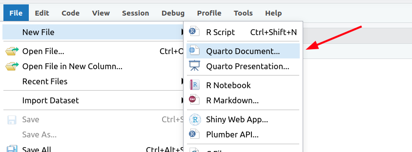
Not
Not. quarto, rstudio.cloud projesinde kurulu geliyor. Kendi bilgisayarınızdaki RStudio’yu kullanıyorsanız önce quarto’yu kurun.
Belgeye başlık verin
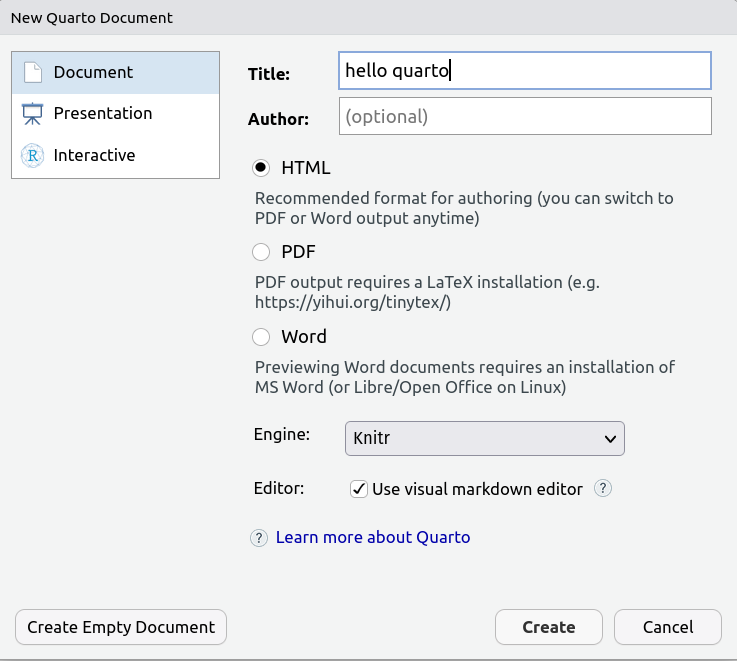
Bu, dosya adı değil, dökümanın başlığıdır
Dosyayı kaydedelim
En başta Untitled/Adsız olarak açıldı; şimdi farklı isimle kaydedelim
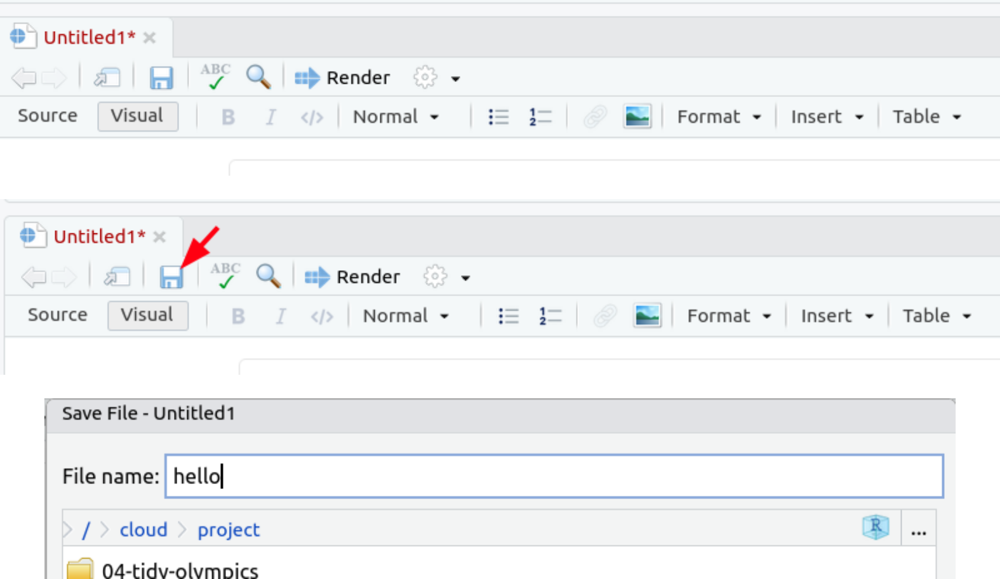
Artık belgeyi derleyebiliriz (Render)
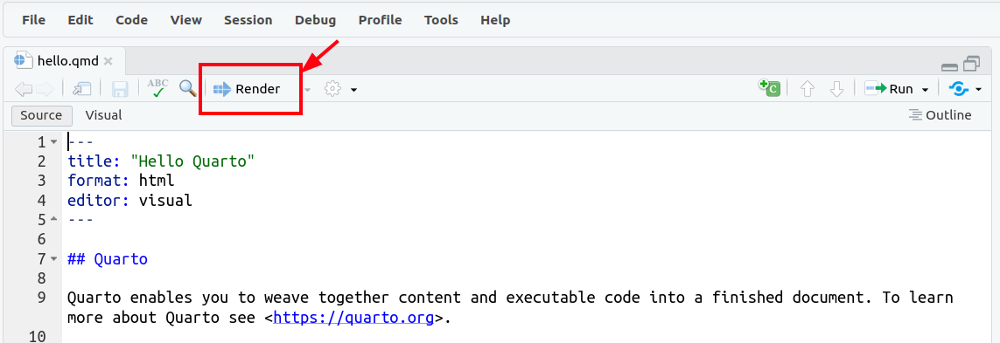
İpucu
İpucu. İlk derlemede Console’a install.packages("rmarkdown") yazarak rmarkdown paketini kurmanız istenebilir.
Kod bloğu anatomisi
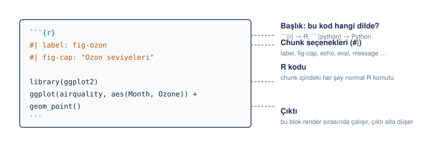
Chunk seçenekleri
| Seçenek | Ne yapar | Ne zaman |
|---|---|---|
echo: false |
Kodu gizler | Rapor gövdesinde |
eval: false |
Kodu çalıştırmaz | Kurulum gereken bloklarda |
message: false |
Mesajları gizler | library() çağrılarında |
warning: false |
Uyarıları gizler | Gürültülü analizlerde |
include: false |
Çıktıyı belgeye koymaz | Yardımcı hesaplamalar |
fig-cap, label |
Başlık ve kimlik | Çapraz referans için |
fig-width, fig-height |
Şekil boyutu (inç) | Slayda yerleşim ayarı |
Seçenekler #| ile (chunk içinde) ya da YAML execute: bloğunda yazılır. cache: true bir sonraki slaytta.
Kodu gizlemek: echo
echo: false — sadece sonuç
Kural
Rapor kodu gizler (echo: false), ders/sunum kodu gösterir (echo: true). Aynı .qmdyi farklı çıktılara dönüştürürken bu ayrım önemlidir.
Aynı satırda (inline) kod
Metin içine doğrudan R kodu yazabilirsiniz:
Veri setinde 153 gözlem, ortalama ozon 42.1 ppb.yerine
Veri setinde `r nrow(airquality)` gözlem, ortalama ozon `r round(mean(airquality$Ozon, na.rm = TRUE), 1)` ppb.Render sırasında hesaplanır ve metne gömülür.
Neden önemli?
Raporda “veride 153 satır vardı” yazıp sonra veri değişirse sayı yanlış kalır. Inline kod sayıyı her derlemede günceller.
Inline kod: kaynak ve sonuç
Belgeye şu satırı yazarsınız:
`mtcars` verisinde `r nrow(mtcars)` gözlem vardır. Aşağıdaki tablo ortalama
şehir ve otoyol tüketimini marka ve silindir sayısına göre gösterir.Derleme sonucu ekranda şöyle görünür:
mtcars verisinde 32 gözlem vardır. Aşağıdaki tablo ortalama şehir ve otoyol tüketimini marka ve silindir sayısına göre gösterir.
İpucu
İpucu. Üstteki satır kaynak, alttakini ise Quarto derleme sırasında hesaplayıp yazdı.
Şekil üretmek
#| label: fig-ozon
#| fig-cap: "Aylık ortalama ozon seviyesi (airquality, 1973)"
#| fig-width: 8
#| fig-height: 4
library(ggplot2)
ozon <- aggregate(Ozone ~ Month, airquality, mean, na.rm = TRUE)
ggplot(ozon, aes(Month, Ozone)) +
geom_line(color = "#222B57", linewidth = 0.9) +
scale_x_continuous(breaks = 5:9, labels = c("May", "Haz", "Tem", "Ağu", "Eyl")) +
labs(x = "Ay", y = "Ozon (ppb)", title = "Ozon mevsimsel değişimi") +
theme_minimal(base_size = 14)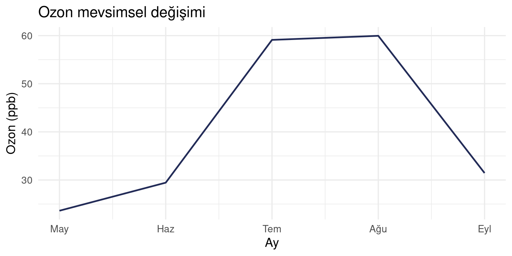
Şekil 1: Aylık ortalama ozon seviyesi (airquality, 1973)
Çapraz referans
derlenmeden önce:
Bakınız: @fig-ozon
| Ay | Ortalama ozon (ppb) |
|---|---|
| Mayıs | 23.6 |
| Temmuz | 59.1 |
| Eylül | 31.4 |
Table: Aylık ortalama ozon seviyesi (airquality) {#tbl-ozon}
Bakınız: @tbl-ozonÇapraz referans
Bakınız: Şekil 1
| Ay | Ortalama ozon (ppb) |
|---|---|
| Mayıs | 23.6 |
| Temmuz | 59.1 |
| Eylül | 31.4 |
Bakınız: Tablo 1
Numaralar otomatik
Şekil/tablo numarası elle yazılmaz; metin değişince güncellenir. Yeni bir şekil eklerseniz numaralar kendiliğinden kayar. Bu slaytta, @fig-ozon ve @tbl-ozon ifadeleri Şekil 1 ve Tablo 1 olarak gösterilmiştir.
Tablolar
R verisini tek başına kullandığınızda tablo olarak gösterilir
# A tibble: 5 × 2
Month ortalama_ozon
<int> <dbl>
1 5 23.6
2 6 29.4
3 7 59.1
4 8 60.0
5 9 31.4Fakat bu HTML, PDF veya Word’deki tablo gibi değildir. Bunun için knitr::kable veya gt kullanılmalıdır.
knitr::kable
| Month | ortalama_ozon |
|---|---|
| 5 | 23.61538 |
| 6 | 29.44444 |
| 7 | 59.11538 |
| 8 | 59.96154 |
| 9 | 31.44828 |
kable()— hızlı, başkaR kütüphanelerine bağlı olmayan, pandoc uyumlu tablo oluşturur (HTML, PDF ve Word’e çevrilebilen tablolar)- bu örnek otomatik olarak “Tablo 2” olarak numaralandırılmıştır
gtpaketi — biçimlendirilmiş, “yayın kalitesinde” tablolar
gt tablo örneği 1
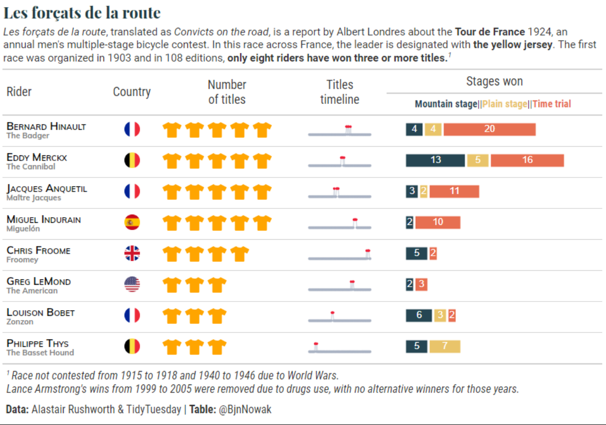
gt tablo örneği 2
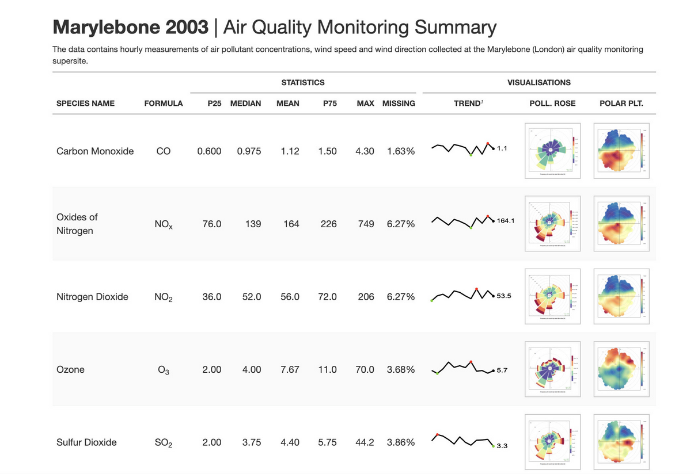
YAML başlığı: belgenin ayarları
YAML belgenin kimlik kartıdır: başlık, yazar, çıktı biçimi, çalıştırma ayarları.
Hangi çıktı?
| Biçim | Ne zaman | Not |
|---|---|---|
html |
Rapor, ödev, paylaşım | Varsayılan; tarayıcıda açılır |
pdf |
Makale, teslim | LaTeX gerekir (TinyTeX) |
docx |
Danışmana/arkadaşa gönderim | Word’de düzeltilebilir |
revealjs |
Sunum | Sizin bu derste kullandığınız |
poster |
Poster | Şablon gerekir (aşağıya bakın) |
website |
Site | _quarto.yml ile klasör halinde |
Biçimi YAML’de seçersiniz ya da komut satırından --to ile değiştirirsiniz.
HTML raporunu ayarlamak
format:
html:
toc: true # sol tarafta içindekiler
number-sections: true # 1. Giriş, 2. Yöntem, 3. Sonuç
code-fold: show # kod katlanır, tıklanınca açılır
code-summary: "Kodu göster"
df-print: kable # veri tabloları kable biçiminde
embed-resources: true # tek dosya HTML (paylaşım için)
theme: cosmo
fontsize: 11Aynı içerik, iki kişi
format: html yazan öğrenci tarayıcıda okur; format: pdf yazan aynı dosyayı makale biçiminde teslim eder. Analiz kodu tek yerde kalır.
Zengin içerik: callout
::: {.callout-note}
**Not.** Bilgilendirme cümlesi.
:::şeklindeki içerik, aşağıdaki gibi yorumlanır
Not
Not. Bilgilendirme cümlesi.
Callout’lar “kutu” değil, okuma rehberidir: 5 tip (note, tip, warning, caution, important).
Sekmeler
Aşağıdaki içeriğin yorumlanmış halini bir sonraki slaytta inceleyiniz:
'data.frame': 153 obs. of 6 variables:
$ Ozone : int 41 36 12 18 NA 28 23 19 8 NA ...
$ Solar.R: int 190 118 149 313 NA NA 299 99 19 194 ...
$ Wind : num 7.4 8 12.6 11.5 14.3 14.9 8.6 13.8 20.1 8.6 ...
$ Temp : int 67 72 74 62 56 66 65 59 61 69 ...
$ Month : int 5 5 5 5 5 5 5 5 5 5 ...
$ Day : int 1 2 3 4 5 6 7 8 9 10 ... Min. 1st Qu. Median Mean 3rd Qu. Max. NAs
1.00 18.00 31.50 42.13 63.25 168.00 37 Sütunlar
Aşağıdaki içeriğin yorumlanmış halini bir sonraki slaytta inceleyiniz:
Sütun 1 — yöntem
- adım1
- adım2
- adım3
Sütun 2

Kaynakça ve atıf
Metinde: [@wickham2022] yazdığınızda (Wickham ve Grolemund 2023) şeklinde atıfa çevrilir.
Raporun sonuna Quarto, kaynakçayı otomatik ekler.
Ders notlarımızın klasör yapısı
Ders notlarımızın kaynak kodları alperyilmaz/mbg4181 reposunda, aşağıdaki şekildedir
├── 404.qmd # bulunamayan sayfalar için gösterilecek mesaj
├── about.qmd # hakkında sayfası
├── data/
├── ders*.qmd # her bir dersin sunumu
├── docs/ # qmd dosyalarının render hali
├── images/
├── index.qmd # ders takvimi (site girişi)
└── _quarto.yml # proje hakkında ayarlarRaporu üretmek
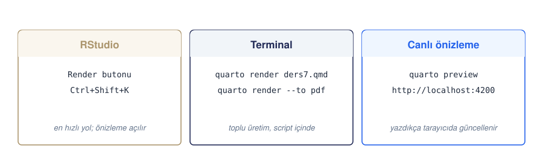
cache ve freeze
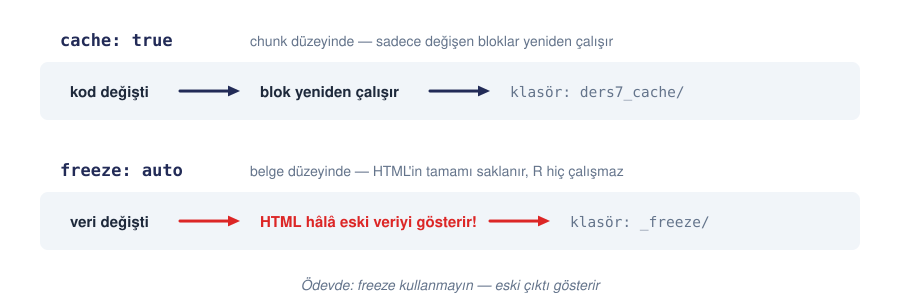
cache: true→ chunk düzeyinde: sadece değişen blok yeniden çalışırfreeze: auto→ belge düzeyinde: HTML’in tamamı saklanır, R hiç çalışmaz
Dikkat
freeze kullanırsanız veri değişse bile eski çıktıyı görürsünüz. Ödevde freeze kullanmayın; sadece cache kullanın.
Parametreler ile raporlama
ggplot dersinin sonundaki görsel için qmd dosyası hazırlayalım ve her bir yıl için çıktı üretelim.
quarto render gapminder-year.qmd --execute-param year="2007" -o gapminder-2007.html
quarto render gapminder-year.qmd --execute-param year="2002" -o gapminder-2002.html
quarto render gapminder-year.qmd --execute-param year="1997" -o gapminder-1997.html
quarto render gapminder-year.qmd --execute-param year="1992" -o gapminder-1992.htmlParametreler YAML başlığında tanımlanır, komut satırından değiştirilir: aynı analiz kodunu farklı veri aralıklarıyla çalıştırabilirsiniz.
Rapor anatomisi
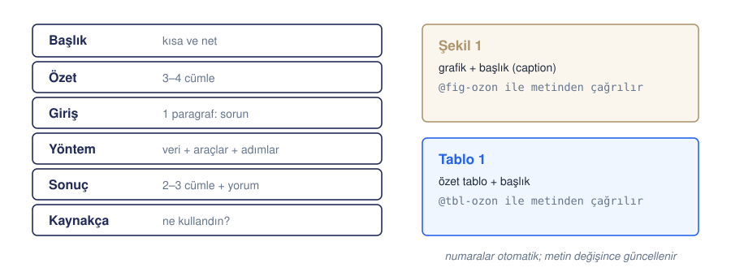
Raporun omurgası sabittir; poster de aynı omurganın kısaltılmışıdır.
Poster
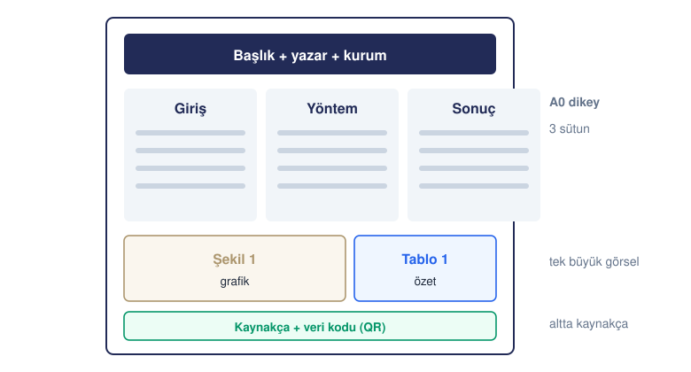
- A0 dikey: 3 sütun, üstte başlık, altta kaynakça
- Tek mesaj, tek ana görsel — poster bir rapor değil, bir özet
- İçerik aynı Quarto dosyasından üretilir:
Poster: adım adım
- posit.cloud’a girin ya da kendi bilgisayarınızda RStudio’yu açın
- posit.cloud’da yeni bir proje başlatın
- Terminal’de şu komutu çalıştırın:
quarto use template bbucior/docposter - Ardından şu cevapları verin:
- Do you trust: yes
- Subdirectory: yes
- Name: istediğiniz ad
- Continue: yes
- Bazı paketleri kurabilir/güncelleyebilir (yalnızca ilk seferde)
- Sonra klasöre gidin, verdiğiniz adla
.qmddosyasını açın - Belgeyi Render edin (ilk derlemede paket kurulabilir)
- Oluşan html dosyasını Web Browser’da açın
Sık hatalar
Veri / yol hataları
- Veriyi mutlak yolla (
/Users/...) çağırmak → başkasında çalışmaz read_csv("veri.csv")→ çalışma klasörü farklıysa hata- Dosya adında Türkçe karakter / boşluk
- Şekli PNG yerine kaybetmeyen formatta (SVG/PDF) saklamamak
Quarto hataları
freezeaçık kalmış → eski çıktıcacheaçık kalmış → değişen kod eski sonucu gösteriyorfig-capunutulmuş → şekilsiz rapor- Çapraz referans yerine elle “Şekil 1” yazmak
- Render edilen
docs/dosyasını elle düzenlemek
Sıra Sizde
Kendi analizinizi bir Quarto raporuna dönüştürün.
Kaynaklar
- Quarto rehberi: quarto.org/docs
- Raporlama: quarto.org/docs/computations/r
- Biçimler: quarto.org/docs/formats
- Atıf: quarto.org/docs/citations
- Slaytlar: rstudio.github.io/quarto
- Markdown: markdownguide.org
Kaynakça
Wickham, Hadley, ve Garrett Grolemund. 2023. R for Data Science: Import, Tidy, Transform, Visualize, and Model Data. 2. bs. O’Reilly Media.